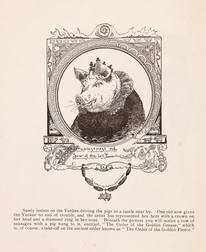

|  |
Sandy insists on the Yankee driving the pigs to a castle near by. One old sow gives the Yankee no end of trouble, and the artist has represented her here with a crown on her head and a diamond ring in her nose. Beneath the picture you will notice a row of sausages with a pig hung to it, entitled, "The Order of the Golden Grease," which is, of course, a take-off on the ancient order known as "The Order of the Golden Fleece." |